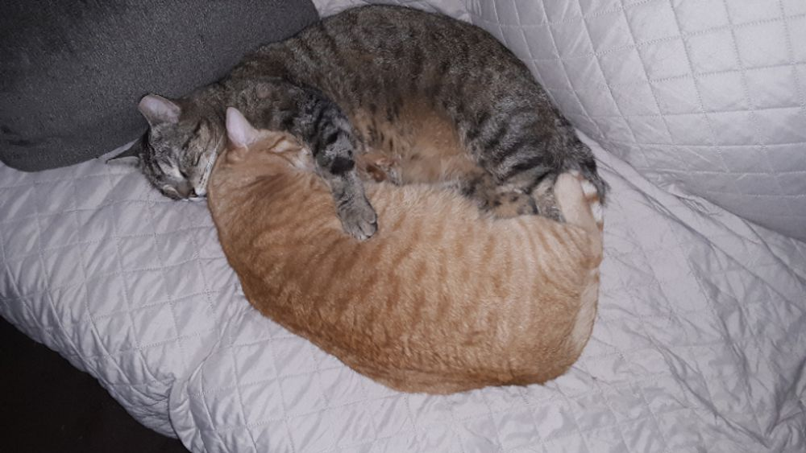

Miau Bistrócat café · medellín

Esta página se fue a dormir.
Como Tofu, decidió tomarse una siesta y no la encontramos. Vuelve al inicio o reserva una mesa: los gatos te están esperando.
Volver al inicio Reservar mesa
Como Tofu, decidió tomarse una siesta y no la encontramos. Vuelve al inicio o reserva una mesa: los gatos te están esperando.
Volver al inicio Reservar mesa